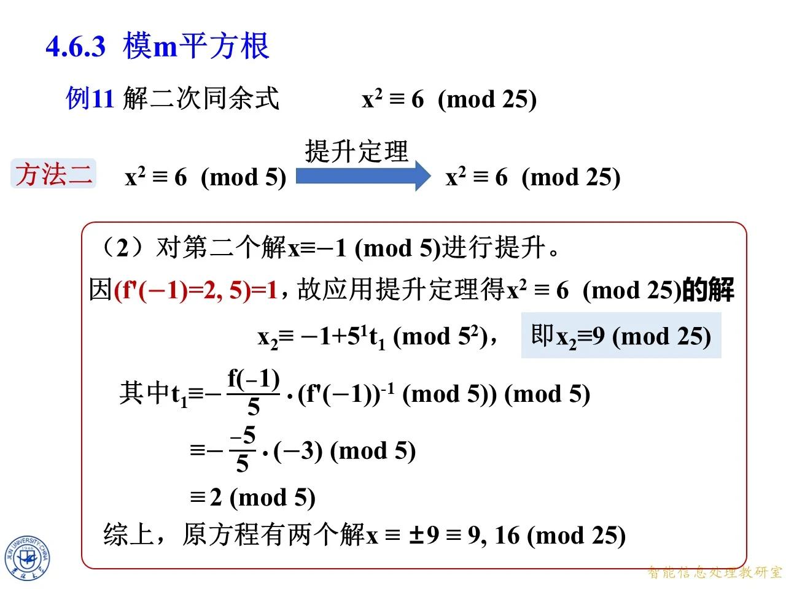
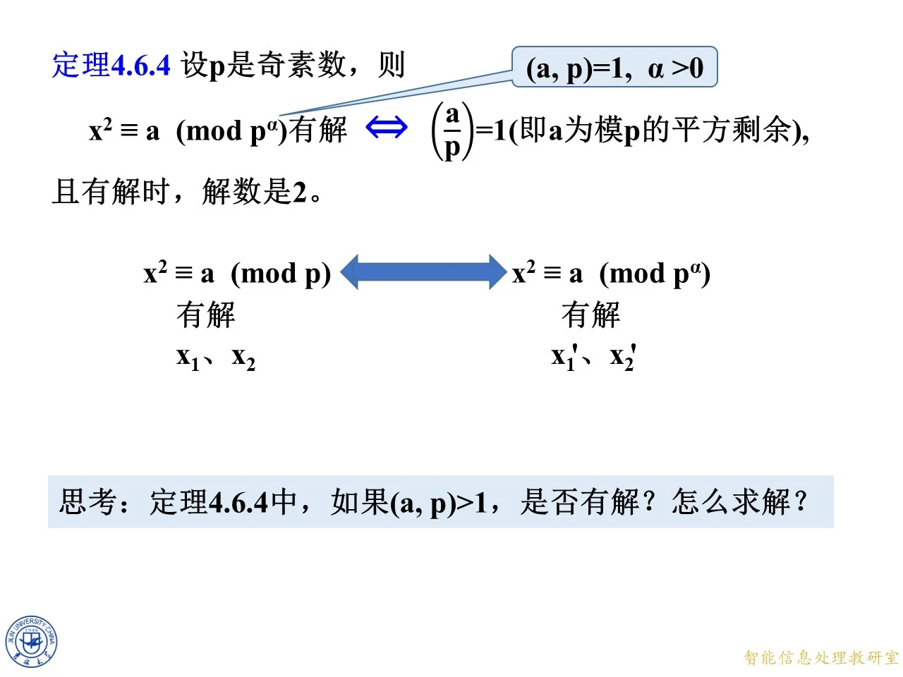
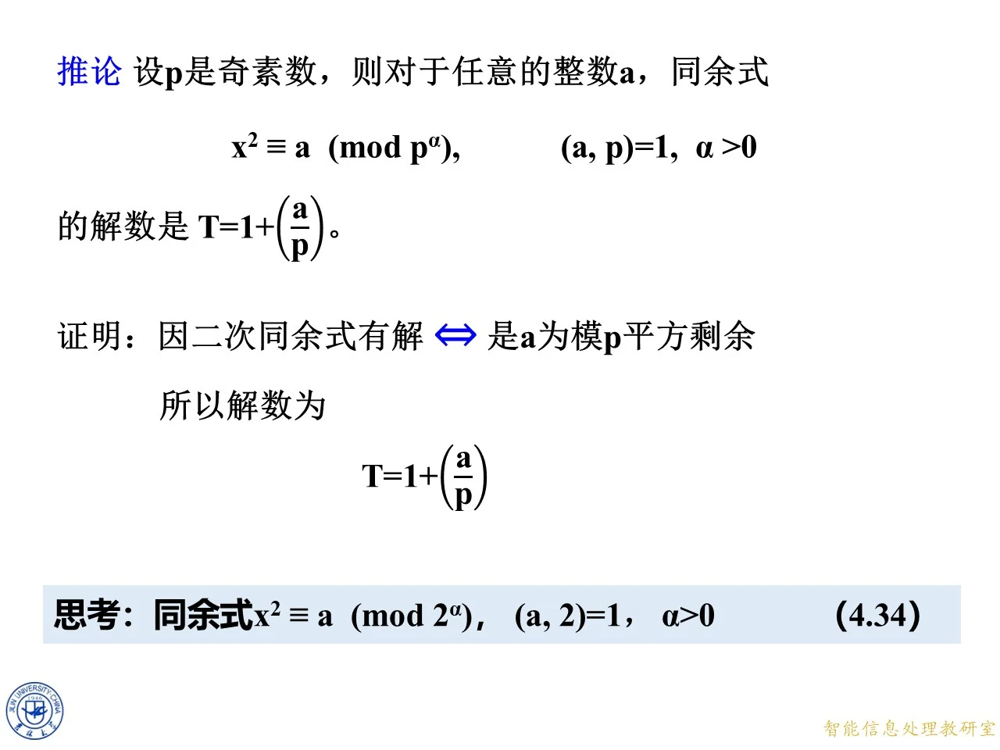

本主题讲解奇素数幂模下的平方根问题：已知模奇素数 p 的根，如何判定并求出模 p 的 α 次幂的全部根，解数又是几。内容以例 11 为主线，先用代入法、再用同余式的提升定理解同一个方程，最后归纳成定理 4.6.4 的统一判定与一个解数公式，并补全课件留下的两个思考题。在章内它属于 4.6.3 节模 m 平方根的前半部分，前面刚学过模 p 平方剩余的判定，本课末尾的思考题则引出下一主题模 2 的幂的平方根。
例 11 方法一：代入法逐层提升
◆ p.637-644 ｜例 11·方法一：代入法提升（另 10 月 19 日授课录制同内容：p.295-302）
课件原题（例 11）：解二次同余式 x 2 ≡ 6 ( m o d 25 ) x^2\equiv6\pmod{25} x 2 ≡ 6 ( mod 25 ) 25 = 5 2 25=5^2 25 = 5 2 p = 5 p=5 p = 5 ( 6 , 5 ) = 1 (6,5)=1 ( 6 , 5 ) = 1 x 2 ≡ 6 ( m o d 5 ) x^2\equiv6\pmod 5 x 2 ≡ 6 ( mod 5 ) x 2 ≡ 6 ( m o d 25 ) x^2\equiv6\pmod{25} x 2 ≡ 6 ( mod 25 ) p p p p p p p 2 p^2 p 2
第一步，解 x 2 ≡ 6 ( m o d 5 ) x^2\equiv6\pmod5 x 2 ≡ 6 ( mod 5 ) 6 ≡ 1 ( m o d 5 ) 6\equiv1\pmod5 6 ≡ 1 ( mod 5 ) x 2 ≡ 1 ( m o d 5 ) x^2\equiv1\pmod5 x 2 ≡ 1 ( mod 5 ) ( x − 1 ) ( x + 1 ) ≡ 0 ( m o d 5 ) (x-1)(x+1)\equiv0\pmod5 ( x − 1 ) ( x + 1 ) ≡ 0 ( mod 5 ) 5 5 5 5 ∣ x − 1 5\mid x-1 5 ∣ x − 1 5 ∣ x + 1 5\mid x+1 5 ∣ x + 1
x ≡ ± 1 ( m o d 5 ) , x\equiv\pm1\pmod5, x ≡ ± 1 ( mod 5 ) ,
也就是 x ≡ 1 x\equiv1 x ≡ 1 x ≡ 4 ( m o d 5 ) x\equiv4\pmod5 x ≡ 4 ( mod 5 ) 0 , 1 , 2 , 3 , 4 0,1,2,3,4 0 , 1 , 2 , 3 , 4 0 , 1 , 4 , 4 , 1 0,1,4,4,1 0 , 1 , 4 , 4 , 1
第二步，对第一个解 x ≡ 1 ( m o d 5 ) x\equiv1\pmod5 x ≡ 1 ( mod 5 ) 25 25 25 1 1 1 5 5 5
x = 1 + 5 t , t ∈ Z , x=1+5t,\quad t\in\mathbb Z, x = 1 + 5 t , t ∈ Z ,
代入 x 2 ≡ 6 ( m o d 25 ) x^2\equiv6\pmod{25} x 2 ≡ 6 ( mod 25 ) ( 1 + 5 t ) 2 ≡ 6 ( m o d 25 ) (1+5t)^2\equiv6\pmod{25} ( 1 + 5 t ) 2 ≡ 6 ( mod 25 ) ( 1 + 5 t ) 2 = 1 + 10 t + 25 t 2 (1+5t)^2=1+10t+25t^2 ( 1 + 5 t ) 2 = 1 + 10 t + 25 t 2 25 25 25 25 t 2 ≡ 0 25t^2\equiv0 25 t 2 ≡ 0
1 + 10 t ≡ 6 ( m o d 25 ) ⟹ 10 t ≡ 5 ( m o d 25 ) . 1+10t\equiv6\pmod{25}\;\Longrightarrow\;10t\equiv5\pmod{25}. 1 + 10 t ≡ 6 ( mod 25 ) ⟹ 10 t ≡ 5 ( mod 25 ) .
两边与模 25 25 25 5 5 5 k a ≡ k b ( m o d k n ) ka\equiv kb\pmod{kn} ka ≡ kb ( mod kn ) a ≡ b ( m o d n ) a\equiv b\pmod n a ≡ b ( mod n )
2 t ≡ 1 ( m o d 5 ) . 2t\equiv1\pmod5. 2 t ≡ 1 ( mod 5 ) .
2 2 2 5 5 5 3 3 3 2 × 3 = 6 ≡ 1 ( m o d 5 ) 2\times3=6\equiv1\pmod5 2 × 3 = 6 ≡ 1 ( mod 5 ) t ≡ 3 ( m o d 5 ) t\equiv3\pmod5 t ≡ 3 ( mod 5 )
x = 1 + 5 t ≡ 1 + 5 × 3 ≡ 16 ( m o d 25 ) . x=1+5t\equiv1+5\times3\equiv16\pmod{25}. x = 1 + 5 t ≡ 1 + 5 × 3 ≡ 16 ( mod 25 ) .
第三步，对第二个解 x ≡ − 1 ( m o d 5 ) x\equiv-1\pmod5 x ≡ − 1 ( mod 5 ) x = − 1 + 5 t x=-1+5t x = − 1 + 5 t
( − 1 + 5 t ) 2 ≡ 6 ( m o d 25 ) ⟹ 1 − 10 t ≡ 6 ( m o d 25 ) ⟹ − 10 t ≡ 5 ( m o d 25 ) , (-1+5t)^2\equiv6\pmod{25}\;\Longrightarrow\;1-10t\equiv6\pmod{25}\;\Longrightarrow\;-10t\equiv5\pmod{25}, ( − 1 + 5 t ) 2 ≡ 6 ( mod 25 ) ⟹ 1 − 10 t ≡ 6 ( mod 25 ) ⟹ − 10 t ≡ 5 ( mod 25 ) ,
约去公因子 5 5 5 − 2 t ≡ 1 ( m o d 5 ) -2t\equiv1\pmod5 − 2 t ≡ 1 ( mod 5 ) − 1 -1 − 1 2 t ≡ − 1 ≡ 4 ( m o d 5 ) 2t\equiv-1\equiv4\pmod5 2 t ≡ − 1 ≡ 4 ( mod 5 ) t ≡ 4 × 3 ≡ 12 ≡ 2 ( m o d 5 ) t\equiv4\times3\equiv12\equiv2\pmod5 t ≡ 4 × 3 ≡ 12 ≡ 2 ( mod 5 )
x = − 1 + 5 t ≡ − 1 + 5 × 2 ≡ 9 ( m o d 25 ) . x=-1+5t\equiv-1+5\times2\equiv9\pmod{25}. x = − 1 + 5 t ≡ − 1 + 5 × 2 ≡ 9 ( mod 25 ) .
验算：16 2 = 256 = 10 × 25 + 6 ≡ 6 ( m o d 25 ) 16^2=256=10\times25+6\equiv6\pmod{25} 1 6 2 = 256 = 10 × 25 + 6 ≡ 6 ( mod 25 ) 9 2 = 81 = 3 × 25 + 6 ≡ 6 ( m o d 25 ) 9^2=81=3\times25+6\equiv6\pmod{25} 9 2 = 81 = 3 × 25 + 6 ≡ 6 ( mod 25 )
综上，原方程有两个解：
x ≡ ± 9 ≡ 9 , 16 ( m o d 25 ) . x\equiv\pm9\equiv9,\,16\pmod{25}. x ≡ ± 9 ≡ 9 , 16 ( mod 25 ) .
拓展 （课件外补充）：注意每个模 5 5 5 t t t 5 5 5 p p p p 2 p^2 p 2 p p p p p p 2 2 2 4 4 4 x = 4 + 5 t x=4+5t x = 4 + 5 t 16 + 40 t ≡ 6 ( m o d 25 ) 16+40t\equiv6\pmod{25} 16 + 40 t ≡ 6 ( mod 25 ) 3 t ≡ 3 ( m o d 5 ) 3t\equiv3\pmod5 3 t ≡ 3 ( mod 5 ) t ≡ 1 t\equiv1 t ≡ 1 x ≡ 9 ( m o d 25 ) x\equiv9\pmod{25} x ≡ 9 ( mod 25 )

课件原图 · 第四章第3-4节-原版 · 第 649 页 查看前后已收录原页 → 定理 3.3.2（同余式的提升定理）与例 11 方法二
◆ p.645 ｜定理 3.3.2（同余式的提升定理）（另 10 月 19 日授课录制同内容：p.303）
课件原文（定理 3.3.2）：设 x ≡ x 1 ( m o d p ) x\equiv x_1\pmod p x ≡ x 1 ( mod p )
f ( x ) ≡ 0 ( m o d p ) f(x)\equiv0\pmod p f ( x ) ≡ 0 ( mod p )
（课件编号 (4)）的一个解，且 ( f ′ ( x 1 ) , p ) = 1 (f'(x_1),p)=1 ( f ′ ( x 1 ) , p ) = 1 f ( x ) ≡ 0 ( m o d p α ) f(x)\equiv0\pmod{p^\alpha} f ( x ) ≡ 0 ( mod p α ) x ≡ x α ( m o d p α ) x\equiv x_\alpha\pmod{p^\alpha} x ≡ x α ( mod p α ) x α x_\alpha x α
x i ≡ x i − 1 + p i − 1 t i − 1 ( m o d p i ) , x_i\equiv x_{i-1}+p^{i-1}t_{i-1}\pmod{p^i}, x i ≡ x i − 1 + p i − 1 t i − 1 ( mod p i ) ,
t i − 1 ≡ − f ( x i − 1 ) p i − 1 ⋅ ( f ′ ( x 1 ) ) − 1 ( m o d p ) , i = 2 , 3 , … , α . t_{i-1}\equiv-\frac{f(x_{i-1})}{p^{i-1}}\cdot\bigl(f'(x_1)\bigr)^{-1}\pmod p,\qquad i=2,3,\ldots,\alpha. t i − 1 ≡ − p i − 1 f ( x i − 1 ) ⋅ ( f ′ ( x 1 ) ) − 1 ( mod p ) , i = 2 , 3 , … , α .
课件用红字与箭头标出「定理可用的前提条件」是 ( f ′ ( x 1 ) , p ) = 1 (f'(x_1),p)=1 ( f ′ ( x 1 ) , p ) = 1 ( f ′ ( x 1 ) ) − 1 \bigl(f'(x_1)\bigr)^{-1} ( f ′ ( x 1 ) ) − 1
递归从已知的模 p p p x 1 x_1 x 1 i i i p i − 1 p^{i-1} p i − 1 p i p^i p i p α p^\alpha p α x α x_\alpha x α
修正量必须写成 p i − 1 t i − 1 p^{i-1}t_{i-1} p i − 1 t i − 1 p i p^i p i p i − 1 p^{i-1} p i − 1 p i − 1 p^{i-1} p i − 1
分式 f ( x i − 1 ) p i − 1 \dfrac{f(x_{i-1})}{p^{i-1}} p i − 1 f ( x i − 1 ) x i − 1 x_{i-1} x i − 1 p i − 1 p^{i-1} p i − 1 p i − 1 ∣ f ( x i − 1 ) p^{i-1}\mid f(x_{i-1}) p i − 1 ∣ f ( x i − 1 )
取逆元的是 f ′ ( x 1 ) f'(x_1) f ′ ( x 1 ) f ′ ( x i − 1 ) f'(x_{i-1}) f ′ ( x i − 1 ) x i ≡ x 1 ( m o d p ) x_i\equiv x_1\pmod p x i ≡ x 1 ( mod p ) f ′ ( x i ) ≡ f ′ ( x 1 ) ( m o d p ) f'(x_i)\equiv f'(x_1)\pmod p f ′ ( x i ) ≡ f ′ ( x 1 ) ( mod p ) p p p x 1 x_1 x 1
每个 t i − 1 t_{i-1} t i − 1 p p p p p p p α p^\alpha p α
拓展 （课件外补充）：递推式的来历。把 x = x i − 1 + p i − 1 t x=x_{i-1}+p^{i-1}t x = x i − 1 + p i − 1 t f ( x ) f(x) f ( x )
f ( x i − 1 + p i − 1 t ) ≡ f ( x i − 1 ) + p i − 1 t f ′ ( x i − 1 ) ( m o d p i ) , f\bigl(x_{i-1}+p^{i-1}t\bigr)\equiv f(x_{i-1})+p^{i-1}t\,f'(x_{i-1})\pmod{p^i}, f ( x i − 1 + p i − 1 t ) ≡ f ( x i − 1 ) + p i − 1 t f ′ ( x i − 1 ) ( mod p i ) ,
二阶及更高阶项都含因子 p 2 ( i − 1 ) p^{2(i-1)} p 2 ( i − 1 ) i ≥ 2 i\ge2 i ≥ 2 2 ( i − 1 ) ≥ i 2(i-1)\ge i 2 ( i − 1 ) ≥ i p i p^i p i ≡ 0 ( m o d p i ) \equiv0\pmod{p^i} ≡ 0 ( mod p i ) p i − 1 p^{i-1} p i − 1 t i − 1 t_{i-1} t i − 1 p p p p α p^\alpha p α α = 2 \alpha=2 α = 2
◆ p.646-649 ｜例 11·方法二：提升定理的应用（另 10 月 19 日授课录制同内容：p.304-307）
课件方法二的路线图是：x 2 ≡ 6 ( m o d 5 ) x^2\equiv6\pmod 5 x 2 ≡ 6 ( mod 5 ) x 2 ≡ 6 ( m o d 25 ) x^2\equiv6\pmod{25} x 2 ≡ 6 ( mod 25 ) f ( x ) = x 2 − 6 f(x)=x^2-6 f ( x ) = x 2 − 6 f ′ ( x ) = 2 x f'(x)=2x f ′ ( x ) = 2 x 5 5 5 x ≡ ± 1 ( m o d 5 ) x\equiv\pm1\pmod5 x ≡ ± 1 ( mod 5 )
（1）对第一个解 x 1 ≡ 1 ( m o d 5 ) x_1\equiv1\pmod5 x 1 ≡ 1 ( mod 5 ) f ′ ( 1 ) = 2 f'(1)=2 f ′ ( 1 ) = 2 ( f ′ ( 1 ) , 5 ) = ( 2 , 5 ) = 1 (f'(1),5)=(2,5)=1 ( f ′ ( 1 ) , 5 ) = ( 2 , 5 ) = 1 α = 2 \alpha=2 α = 2 i = 2 i=2 i = 2
x 2 ≡ x 1 + 5 1 t 1 ( m o d 5 2 ) , t 1 ≡ − f ( x 1 ) 5 ⋅ ( f ′ ( x 1 ) ) − 1 ( m o d 5 ) . x_2\equiv x_1+5^{1}t_1\pmod{5^2},\qquad t_1\equiv-\frac{f(x_1)}{5}\cdot\bigl(f'(x_1)\bigr)^{-1}\pmod5. x 2 ≡ x 1 + 5 1 t 1 ( mod 5 2 ) , t 1 ≡ − 5 f ( x 1 ) ⋅ ( f ′ ( x 1 ) ) − 1 ( mod 5 ) .
代入 f ( 1 ) = 1 − 6 = − 5 f(1)=1-6=-5 f ( 1 ) = 1 − 6 = − 5 f ′ ( 1 ) = 2 f'(1)=2 f ′ ( 1 ) = 2 2 − 1 ≡ 3 ( m o d 5 ) 2^{-1}\equiv3\pmod5 2 − 1 ≡ 3 ( mod 5 )
t 1 ≡ − − 5 5 ⋅ 3 ≡ 1 ⋅ 3 ≡ 3 ( m o d 5 ) , x 2 ≡ 1 + 5 × 3 ≡ 16 ( m o d 25 ) . t_1\equiv-\frac{-5}{5}\cdot3\equiv1\cdot3\equiv3\pmod5,\qquad x_2\equiv1+5\times3\equiv16\pmod{25}. t 1 ≡ − 5 − 5 ⋅ 3 ≡ 1 ⋅ 3 ≡ 3 ( mod 5 ) , x 2 ≡ 1 + 5 × 3 ≡ 16 ( mod 25 ) .
注：课件该行代入时印作 − 5 5 ⋅ 3 -\dfrac{5}{5}\cdot3 − 5 5 ⋅ 3 f ( 1 ) = − 5 f(1)=-5 f ( 1 ) = − 5 − − 5 5 ⋅ 3 -\frac{-5}{5}\cdot3 − 5 − 5 ⋅ 3 t 1 ≡ 3 ( m o d 5 ) t_1\equiv3\pmod5 t 1 ≡ 3 ( mod 5 )
（2）对第二个解 x 1 ≡ − 1 ( m o d 5 ) x_1\equiv-1\pmod5 x 1 ≡ − 1 ( mod 5 ) f ′ ( − 1 ) = − 2 f'(-1)=-2 f ′ ( − 1 ) = − 2 ( f ′ ( − 1 ) , 5 ) = ( − 2 , 5 ) = 1 (f'(-1),5)=(-2,5)=1 ( f ′ ( − 1 ) , 5 ) = ( − 2 , 5 ) = 1 f ′ ( − 1 ) f'(-1) f ′ ( − 1 ) 2 2 2
t 1 ≡ − f ( − 1 ) 5 ⋅ ( f ′ ( − 1 ) ) − 1 ≡ − − 5 5 ⋅ ( − 3 ) ≡ − 3 ≡ 2 ( m o d 5 ) , t_1\equiv-\frac{f(-1)}{5}\cdot\bigl(f'(-1)\bigr)^{-1}\equiv-\frac{-5}{5}\cdot(-3)\equiv-3\equiv2\pmod5, t 1 ≡ − 5 f ( − 1 ) ⋅ ( f ′ ( − 1 ) ) − 1 ≡ − 5 − 5 ⋅ ( − 3 ) ≡ − 3 ≡ 2 ( mod 5 ) ,
其中 ( − 2 ) − 1 ≡ 2 ≡ − 3 ( m o d 5 ) (-2)^{-1}\equiv2\equiv-3\pmod5 ( − 2 ) − 1 ≡ 2 ≡ − 3 ( mod 5 ) ( − 2 ) × 2 = − 4 ≡ 1 ( m o d 5 ) (-2)\times2=-4\equiv1\pmod5 ( − 2 ) × 2 = − 4 ≡ 1 ( mod 5 )
x 2 ≡ − 1 + 5 × 2 ≡ 9 ( m o d 25 ) . x_2\equiv-1+5\times2\equiv9\pmod{25}. x 2 ≡ − 1 + 5 × 2 ≡ 9 ( mod 25 ) .
综上，原方程有两个解 x ≡ ± 9 ≡ 9 , 16 ( m o d 25 ) x\equiv\pm9\equiv9,\,16\pmod{25} x ≡ ± 9 ≡ 9 , 16 ( mod 25 )
拓展 （课件外补充）：把两种方法对照着看——方法一设 x = x 1 + p t x=x_1+pt x = x 1 + pt f ( x ) ≡ 0 ( m o d p 2 ) f(x)\equiv0\pmod{p^2} f ( x ) ≡ 0 ( mod p 2 ) α \alpha α p p p p 2 p^2 p 2 p α p^\alpha p α
练习：求解模 125 下 24 的平方根
◆ p.650 ｜练习：模 125 下 24 的平方根（另 10 月 19 日授课录制同内容：p.308）
课件原题：求解同余式 x 2 ≡ 24 ( m o d 125 ) x^2\equiv24\pmod{125} x 2 ≡ 24 ( mod 125 ) 125 = 5 3 125=5^3 125 = 5 3 α = 3 \alpha=3 α = 3 ( 24 , 5 ) = 1 (24,5)=1 ( 24 , 5 ) = 1 5 5 5 25 25 25 125 125 125
拓展 （课件外补充）：课件只留题目、未给解答，以下解题过程为补全。
第一步，x 2 ≡ 24 ≡ 4 ( m o d 5 ) x^2\equiv24\equiv4\pmod5 x 2 ≡ 24 ≡ 4 ( mod 5 ) x ≡ ± 2 ( m o d 5 ) x\equiv\pm2\pmod5 x ≡ ± 2 ( mod 5 ) 2 2 2 − 2 ≡ 3 -2\equiv3 − 2 ≡ 3
第二步，从 x ≡ 2 ( m o d 5 ) x\equiv2\pmod5 x ≡ 2 ( mod 5 ) 25 25 25 x = 2 + 5 t x=2+5t x = 2 + 5 t
( 2 + 5 t ) 2 ≡ 24 ( m o d 25 ) ⟹ 4 + 20 t ≡ 24 ( m o d 25 ) ⟹ 20 t ≡ 20 ( m o d 25 ) , (2+5t)^2\equiv24\pmod{25}\;\Longrightarrow\;4+20t\equiv24\pmod{25}\;\Longrightarrow\;20t\equiv20\pmod{25}, ( 2 + 5 t ) 2 ≡ 24 ( mod 25 ) ⟹ 4 + 20 t ≡ 24 ( mod 25 ) ⟹ 20 t ≡ 20 ( mod 25 ) ,
约去公因子 5 5 5 4 t ≡ 4 ( m o d 5 ) 4t\equiv4\pmod5 4 t ≡ 4 ( mod 5 ) t ≡ 1 ( m o d 5 ) t\equiv1\pmod5 t ≡ 1 ( mod 5 ) x ≡ 2 + 5 × 1 ≡ 7 ( m o d 25 ) x\equiv2+5\times1\equiv7\pmod{25} x ≡ 2 + 5 × 1 ≡ 7 ( mod 25 ) 7 2 = 49 ≡ 24 ( m o d 25 ) 7^2=49\equiv24\pmod{25} 7 2 = 49 ≡ 24 ( mod 25 )
第三步，从 x ≡ 7 ( m o d 25 ) x\equiv7\pmod{25} x ≡ 7 ( mod 25 ) 125 125 125 x = 7 + 25 u x=7+25u x = 7 + 25 u
( 7 + 25 u ) 2 ≡ 24 ( m o d 125 ) ⟹ 49 + 350 u ≡ 24 ( m o d 125 ) ⟹ 350 u ≡ − 25 ( m o d 125 ) . (7+25u)^2\equiv24\pmod{125}\;\Longrightarrow\;49+350u\equiv24\pmod{125}\;\Longrightarrow\;350u\equiv-25\pmod{125}. ( 7 + 25 u ) 2 ≡ 24 ( mod 125 ) ⟹ 49 + 350 u ≡ 24 ( mod 125 ) ⟹ 350 u ≡ − 25 ( mod 125 ) .
350 ≡ 100 ( m o d 125 ) 350\equiv100\pmod{125} 350 ≡ 100 ( mod 125 ) 100 u ≡ − 25 ( m o d 125 ) 100u\equiv-25\pmod{125} 100 u ≡ − 25 ( mod 125 ) 25 25 25 4 u ≡ − 1 ≡ 4 ( m o d 5 ) 4u\equiv-1\equiv4\pmod5 4 u ≡ − 1 ≡ 4 ( mod 5 ) u ≡ 1 ( m o d 5 ) u\equiv1\pmod5 u ≡ 1 ( mod 5 ) x ≡ 7 + 25 × 1 ≡ 32 ( m o d 125 ) x\equiv7+25\times1\equiv32\pmod{125} x ≡ 7 + 25 × 1 ≡ 32 ( mod 125 ) 32 2 = 1024 = 8 × 125 + 24 ≡ 24 ( m o d 125 ) 32^2=1024=8\times125+24\equiv24\pmod{125} 3 2 2 = 1024 = 8 × 125 + 24 ≡ 24 ( mod 125 )
第四步，从 x ≡ − 2 ≡ 3 ( m o d 5 ) x\equiv-2\equiv3\pmod5 x ≡ − 2 ≡ 3 ( mod 5 ) x = 3 + 5 t x=3+5t x = 3 + 5 t
( 3 + 5 t ) 2 ≡ 24 ( m o d 25 ) ⟹ 9 + 30 t ≡ 24 ( m o d 25 ) ⟹ 30 t ≡ 15 ( m o d 25 ) , (3+5t)^2\equiv24\pmod{25}\;\Longrightarrow\;9+30t\equiv24\pmod{25}\;\Longrightarrow\;30t\equiv15\pmod{25}, ( 3 + 5 t ) 2 ≡ 24 ( mod 25 ) ⟹ 9 + 30 t ≡ 24 ( mod 25 ) ⟹ 30 t ≡ 15 ( mod 25 ) ,
即 5 t ≡ 15 ( m o d 25 ) 5t\equiv15\pmod{25} 5 t ≡ 15 ( mod 25 ) 5 5 5 t ≡ 3 ( m o d 5 ) t\equiv3\pmod5 t ≡ 3 ( mod 5 ) x ≡ 3 + 5 × 3 ≡ 18 ( m o d 25 ) x\equiv3+5\times3\equiv18\pmod{25} x ≡ 3 + 5 × 3 ≡ 18 ( mod 25 ) 18 2 = 324 = 12 × 25 + 24 ≡ 24 ( m o d 25 ) 18^2=324=12\times25+24\equiv24\pmod{25} 1 8 2 = 324 = 12 × 25 + 24 ≡ 24 ( mod 25 ) x = 18 + 25 u x=18+25u x = 18 + 25 u
( 18 + 25 u ) 2 ≡ 24 ( m o d 125 ) ⟹ 324 + 900 u ≡ 24 ( m o d 125 ) ⟹ 900 u ≡ − 300 ( m o d 125 ) . (18+25u)^2\equiv24\pmod{125}\;\Longrightarrow\;324+900u\equiv24\pmod{125}\;\Longrightarrow\;900u\equiv-300\pmod{125}. ( 18 + 25 u ) 2 ≡ 24 ( mod 125 ) ⟹ 324 + 900 u ≡ 24 ( mod 125 ) ⟹ 900 u ≡ − 300 ( mod 125 ) .
900 ≡ 25 ( m o d 125 ) 900\equiv25\pmod{125} 900 ≡ 25 ( mod 125 ) − 300 ≡ 75 ( m o d 125 ) -300\equiv75\pmod{125} − 300 ≡ 75 ( mod 125 ) 25 u ≡ 75 ( m o d 125 ) 25u\equiv75\pmod{125} 25 u ≡ 75 ( mod 125 ) 25 25 25 u ≡ 3 ( m o d 5 ) u\equiv3\pmod5 u ≡ 3 ( mod 5 ) x ≡ 18 + 25 × 3 ≡ 93 ( m o d 125 ) x\equiv18+25\times3\equiv93\pmod{125} x ≡ 18 + 25 × 3 ≡ 93 ( mod 125 ) 93 2 = 8649 = 69 × 125 + 24 ≡ 24 ( m o d 125 ) 93^2=8649=69\times125+24\equiv24\pmod{125} 9 3 2 = 8649 = 69 × 125 + 24 ≡ 24 ( mod 125 )
答案：x ≡ 32 ( m o d 125 ) x\equiv32\pmod{125} x ≡ 32 ( mod 125 ) x ≡ 93 ( m o d 125 ) x\equiv93\pmod{125} x ≡ 93 ( mod 125 ) x ≡ ± 32 ( m o d 125 ) x\equiv\pm32\pmod{125} x ≡ ± 32 ( mod 125 )
拓展 （课件外补充）：为什么只从模 5 5 5 ( 24 , 5 ) = 1 (24,5)=1 ( 24 , 5 ) = 1 5 3 5^3 5 3 5 5 5 2 2 2 p p p 125 125 125 { 32 , 93 } \{32,93\} { 32 , 93 } ( a , p ) > 1 (a,p)>1 ( a , p ) > 1
定理 4.6.4：奇素数幂模的平方根
◆ p.651-654 ｜证明思路之提升方向（另 10 月 19 日授课录制同内容：p.309-312）
课件第一张图示给出「提升」方向：x 2 ≡ a ( m o d p ) x^2\equiv a\pmod p x 2 ≡ a ( mod p ) x 1 x_1 x 1 x 2 x_2 x 2 x 2 ≡ a ( m o d p α ) x^2\equiv a\pmod{p^\alpha} x 2 ≡ a ( mod p α ) x 1 ′ x_1' x 1 ′ x 2 ′ x_2' x 2 ′ ( f ′ ( x ) = 2 x , p ) = 1 (f'(x)=2x,\ p)=1 ( f ′ ( x ) = 2 x , p ) = 1 f ( x ) = x 2 − a f(x)=x^2-a f ( x ) = x 2 − a f ′ ( x ) = 2 x f'(x)=2x f ′ ( x ) = 2 x ( a , p ) = 1 (a,p)=1 ( a , p ) = 1 p p p 0 0 0 0 2 ≡ a ( m o d p ) 0^2\equiv a\pmod p 0 2 ≡ a ( mod p ) p ∤ 2 x p\nmid 2x p ∤ 2 x p p p ( 2 x , p ) = 1 (2x,p)=1 ( 2 x , p ) = 1
注：课件该处把条件印成 ( f ′ ( x ) = 2 x , p ) > 1 (f'(x)=2x,\ p)>1 ( f ′ ( x ) = 2 x , p ) > 1 ( f ′ ( x 1 ) , p ) = 1 (f'(x_1),p)=1 ( f ′ ( x 1 ) , p ) = 1 1 1 1 p p p p p p
◆ p.655-656 ｜证明思路之约化方向（另 10 月 19 日授课录制同内容：p.313-314）
课件第二、三张图示说明反方向：由 p α ∣ x 2 − a p^\alpha\mid x^2-a p α ∣ x 2 − a p ∣ x 2 − a p\mid x^2-a p ∣ x 2 − a x 2 ≡ a ( m o d p α ) x^2\equiv a\pmod{p^\alpha} x 2 ≡ a ( mod p α ) p α ∣ x 2 − a p^\alpha\mid x^2-a p α ∣ x 2 − a p α p^\alpha p α p p p p ∣ x 2 − a p\mid x^2-a p ∣ x 2 − a x 2 ≡ a ( m o d p ) x^2\equiv a\pmod p x 2 ≡ a ( mod p ) p ∣ x 2 − a p\mid x^2-a p ∣ x 2 − a p α ∣ x 2 − a p^\alpha\mid x^2-a p α ∣ x 2 − a x 2 ≡ a ( m o d p α ) x^2\equiv a\pmod{p^\alpha} x 2 ≡ a ( mod p α ) x 2 ≡ a ( m o d p ) x^2\equiv a\pmod p x 2 ≡ a ( mod p ) p p p
两个方向合起来：在 ( a , p ) = 1 (a,p)=1 ( a , p ) = 1 x 2 ≡ a ( m o d p α ) x^2\equiv a\pmod{p^\alpha} x 2 ≡ a ( mod p α ) x 2 ≡ a ( m o d p ) x^2\equiv a\pmod p x 2 ≡ a ( mod p ) p p p 2 2 2
◆ p.657-660 ｜定理 4.6.4 与思考（另 10 月 19 日授课录制同内容：p.315-318）
课件原文（定理 4.6.4）：设 p p p ( a , p ) = 1 (a,p)=1 ( a , p ) = 1 α > 0 \alpha>0 α > 0 x 2 ≡ a ( m o d p α ) x^2\equiv a\pmod{p^\alpha} x 2 ≡ a ( mod p α ) ( a p ) = 1 \left(\frac ap\right)=1 ( p a ) = 1 a a a p p p 2 2 2 x 2 ≡ a ( m o d p ) x^2\equiv a\pmod p x 2 ≡ a ( mod p ) x 1 x_1 x 1 x 2 x_2 x 2 x 2 ≡ a ( m o d p α ) x^2\equiv a\pmod{p^\alpha} x 2 ≡ a ( mod p α ) x 1 ′ x_1' x 1 ′ x 2 ′ x_2' x 2 ′
把证明拆成四步，每步注明理由：
充分性（从左到右）：若 ( a p ) = 1 \left(\frac ap\right)=1 ( p a ) = 1 x 2 ≡ a ( m o d p ) x^2\equiv a\pmod p x 2 ≡ a ( mod p ) x 1 , x 2 x_1,x_2 x 1 , x 2 ( a , p ) = 1 (a,p)=1 ( a , p ) = 1 x i ≢ 0 ( m o d p ) x_i\not\equiv0\pmod p x i ≡ 0 ( mod p ) ( f ′ ( x i ) , p ) = ( 2 x i , p ) = 1 (f'(x_i),p)=(2x_i,p)=1 ( f ′ ( x i ) , p ) = ( 2 x i , p ) = 1 x i x_i x i p α p^\alpha p α x i ′ x_i' x i ′
必要性（从右到左）：若 x 2 ≡ a ( m o d p α ) x^2\equiv a\pmod{p^\alpha} x 2 ≡ a ( mod p α ) x 2 ≡ a ( m o d p ) x^2\equiv a\pmod p x 2 ≡ a ( mod p ) a a a p p p ( a p ) = 1 \left(\frac ap\right)=1 ( p a ) = 1
解数至多为 2 2 2 p p p ( a p ) = 1 \left(\frac ap\right)=1 ( p a ) = 1 x 1 x_1 x 1 p − x 1 p-x_1 p − x 1 x 1 ≢ 0 x_1\not\equiv0 x 1 ≡ 0 t i − 1 t_{i-1} t i − 1 p p p p p p p α p^\alpha p α
解数至少为 2 2 2 x 1 ′ x_1' x 1 ′ x 2 ′ x_2' x 2 ′ x 1 ′ ≡ x 1 ≢ x 2 ≡ x 2 ′ ( m o d p ) x_1'\equiv x_1\not\equiv x_2\equiv x_2'\pmod p x 1 ′ ≡ x 1 ≡ x 2 ≡ x 2 ′ ( mod p ) 2 2 2
举例对照：取 p = 5 p=5 p = 5 α = 2 \alpha=2 α = 2 a = 6 a=6 a = 6 6 ≡ 1 ( m o d 5 ) 6\equiv1\pmod5 6 ≡ 1 ( mod 5 ) ( 6 5 ) = 1 \left(\frac65\right)=1 ( 5 6 ) = 1 25 25 25 9 9 9 16 16 16 a = 2 a=2 a = 2 5 5 5 1 1 1 4 4 4 ( 2 5 ) = − 1 \left(\frac25\right)=-1 ( 5 2 ) = − 1 x 2 ≡ 2 ( m o d 25 ) x^2\equiv2\pmod{25} x 2 ≡ 2 ( mod 25 ) p ∈ { 3 , 5 , 7 , 11 , 13 } p\in\{3,5,7,11,13\} p ∈ { 3 , 5 , 7 , 11 , 13 } α ≤ 4 \alpha\le4 α ≤ 4 a a a ( a p ) = 1 \left(\frac ap\right)=1 ( p a ) = 1 2 2 2 − 1 -1 − 1 0 0 0
页底蓝框是课件思考题：定理 4.6.4 中，如果 ( a , p ) > 1 (a,p)>1 ( a , p ) > 1 ( f ′ ( x ) , p ) = 1 (f'(x),p)=1 ( f ′ ( x ) , p ) = 1 0 0 0
思考题一（课件原题，p.660 / p.318）：定理 4.6.4 中，如果 ( a , p ) > 1 (a,p)>1 ( a , p ) > 1
此时 a a a p p p p p p a ≡ 0 a\equiv0 a ≡ 0 ( a p ) = 0 \left(\frac ap\right)=0 ( p a ) = 0
拓展 （课件外补充）：先把 a a a p α p^\alpha p α v v v p p p a a a
情形一，p α ∣ a p^\alpha\mid a p α ∣ a v ≥ α v\ge\alpha v ≥ α x 2 ≡ 0 ( m o d p α ) x^2\equiv0\pmod{p^\alpha} x 2 ≡ 0 ( mod p α ) p α ∣ x 2 p^\alpha\mid x^2 p α ∣ x 2 x = p s y x=p^sy x = p s y p ∤ y p\nmid y p ∤ y x 2 = p 2 s y 2 x^2=p^{2s}y^2 x 2 = p 2 s y 2 p p p 2 s 2s 2 s y 2 y^2 y 2 p p p p α ∣ x 2 p^\alpha\mid x^2 p α ∣ x 2 2 s ≥ α 2s\ge\alpha 2 s ≥ α s ≥ ⌈ α / 2 ⌉ s\ge\left\lceil\alpha/2\right\rceil s ≥ ⌈ α /2 ⌉
x ≡ k p ⌈ α / 2 ⌉ ( m o d p α ) , k = 0 , 1 , … , p ⌊ α / 2 ⌋ − 1 , x\equiv k\,p^{\lceil\alpha/2\rceil}\pmod{p^\alpha},\qquad k=0,1,\ldots,p^{\lfloor\alpha/2\rfloor}-1, x ≡ k p ⌈ α /2 ⌉ ( mod p α ) , k = 0 , 1 , … , p ⌊ α /2 ⌋ − 1 ,
共 p ⌊ α / 2 ⌋ p^{\lfloor\alpha/2\rfloor} p ⌊ α /2 ⌋ x 2 ≡ 0 ( m o d 27 ) x^2\equiv0\pmod{27} x 2 ≡ 0 ( mod 27 ) 3 3 3 0 , 9 , 18 0,9,18 0 , 9 , 18 x 2 ≡ 0 ( m o d 25 ) x^2\equiv0\pmod{25} x 2 ≡ 0 ( mod 25 ) 5 5 5 0 , 5 , 10 , 15 , 20 0,5,10,15,20 0 , 5 , 10 , 15 , 20
情形二、三，设 a = p v u a=p^vu a = p v u 0 < v < α 0<v<\alpha 0 < v < α p ∤ u p\nmid u p ∤ u x = p s y x=p^sy x = p s y p ∤ y p\nmid y p ∤ y 2 s ≥ α 2s\ge\alpha 2 s ≥ α x 2 ≡ 0 ( m o d p α ) x^2\equiv0\pmod{p^\alpha} x 2 ≡ 0 ( mod p α ) a = p v u ≢ 0 ( m o d p α ) a=p^vu\not\equiv0\pmod{p^\alpha} a = p v u ≡ 0 ( mod p α ) v < α v<\alpha v < α 2 s < α 2s<\alpha 2 s < α 2 s ≠ v 2s\ne v 2 s = v x 2 − a = p 2 s y 2 − p v u x^2-a=p^{2s}y^2-p^vu x 2 − a = p 2 s y 2 − p v u p p p min ( 2 s , v ) < α \min(2s,v)<\alpha min ( 2 s , v ) < α p α ∤ x 2 − a p^\alpha\nmid x^2-a p α ∤ x 2 − a 2 s = v 2s=v 2 s = v
若 v v v 2 s = v 2s=v 2 s = v x 2 ≡ 3 ( m o d 9 ) x^2\equiv3\pmod9 x 2 ≡ 3 ( mod 9 ) v = 1 v=1 v = 1 x 2 ≡ 5 ( m o d 25 ) x^2\equiv5\pmod{25} x 2 ≡ 5 ( mod 25 ) v = 1 v=1 v = 1
若 v = 2 h v=2h v = 2 h x = p h y x=p^hy x = p h y p ∤ y p\nmid y p ∤ y
p 2 h y 2 ≡ p 2 h u ( m o d p α ) ⟺ y 2 ≡ u ( m o d p α − 2 h ) p^{2h}y^2\equiv p^{2h}u\pmod{p^\alpha}\iff y^2\equiv u\pmod{p^{\alpha-2h}} p 2 h y 2 ≡ p 2 h u ( mod p α ) ⟺ y 2 ≡ u ( mod p α − 2 h )
（两边除以 p 2 h p^{2h} p 2 h ( u p ) = 1 \left(\frac up\right)=1 ( p u ) = 1 ( u p ) = − 1 \left(\frac up\right)=-1 ( p u ) = − 1 y 0 y_0 y 0 p α − 2 h p^{\alpha-2h} p α − 2 h y 0 y_0 y 0 y y y
x ≡ p h ( y 0 + k p α − 2 h ) ( m o d p α ) , k = 0 , 1 , … , p h − 1 , x\equiv p^h\bigl(y_0+k\,p^{\alpha-2h}\bigr)\pmod{p^\alpha},\qquad k=0,1,\ldots,p^h-1, x ≡ p h ( y 0 + k p α − 2 h ) ( mod p α ) , k = 0 , 1 , … , p h − 1 ,
每个 y 0 y_0 y 0 p h p^h p h ± y 0 \pm y_0 ± y 0 2 p h 2p^h 2 p h x 2 ≡ 9 ( m o d 27 ) x^2\equiv9\pmod{27} x 2 ≡ 9 ( mod 27 ) a = 9 = 3 2 × 1 a=9=3^2\times1 a = 9 = 3 2 × 1 h = 1 h=1 h = 1 y 2 ≡ 1 ( m o d 3 ) y^2\equiv1\pmod3 y 2 ≡ 1 ( mod 3 ) y 0 = ± 1 y_0=\pm1 y 0 = ± 1 x ≡ 3 ( ± 1 + 3 k ) ( m o d 27 ) x\equiv3(\pm1+3k)\pmod{27} x ≡ 3 ( ± 1 + 3 k ) ( mod 27 ) 3 , 6 , 12 , 15 , 21 , 24 3,6,12,15,21,24 3 , 6 , 12 , 15 , 21 , 24 6 = 2 × 3 6=2\times3 6 = 2 × 3 x 2 ≡ 18 ( m o d 27 ) x^2\equiv18\pmod{27} x 2 ≡ 18 ( mod 27 ) 18 = 2 × 3 2 18=2\times3^2 18 = 2 × 3 2 u = 2 u=2 u = 2 3 3 3 x 2 ≡ 25 ( m o d 125 ) x^2\equiv25\pmod{125} x 2 ≡ 25 ( mod 125 ) a = 5 2 × 1 a=5^2\times1 a = 5 2 × 1 2 × 5 = 10 2\times5=10 2 × 5 = 10 5 , 20 , 30 , 45 , 55 , 70 , 80 , 95 , 105 , 120 5,20,30,45,55,70,80,95,105,120 5 , 20 , 30 , 45 , 55 , 70 , 80 , 95 , 105 , 120
小结：
a a a 解数
p α ∣ a p^\alpha\mid a p α ∣ a p ⌊ α / 2 ⌋ p^{\lfloor\alpha/2\rfloor} p ⌊ α /2 ⌋
a = p v u a=p^vu a = p v u v v v p ∤ u p\nmid u p ∤ u 0 0 0
a = p 2 h u a=p^{2h}u a = p 2 h u p ∤ u p\nmid u p ∤ u ( u p ) = 1 \left(\frac up\right)=1 ( p u ) = 1 2 p h 2p^h 2 p h
a = p 2 h u a=p^{2h}u a = p 2 h u p ∤ u p\nmid u p ∤ u ( u p ) = − 1 \left(\frac up\right)=-1 ( p u ) = − 1 0 0 0
拓展 （课件外补充）：互素情形就是 v = 0 v=0 v = 0 h = 0 h=0 h = 0 2 p 0 = 2 2p^0=2 2 p 0 = 2 ( a , p ) = 1 (a,p)=1 ( a , p ) = 1 p ∣ a p\mid a p ∣ a 0 0 0 2 p h 2p^h 2 p h p ⌊ α / 2 ⌋ p^{\lfloor\alpha/2\rfloor} p ⌊ α /2 ⌋

课件原图 · 第四章第3-4节-原版 · 第 660 页 查看前后已收录原页 → 推论与思考题二：解数公式与模 2 的幂的平方根
◆ p.661-662 ｜推论与思考（另 10 月 19 日授课录制同内容：p.319-320）
课件原文（推论）：设 p p p a a a
x 2 ≡ a ( m o d p α ) , ( a , p ) = 1 , α > 0 x^2\equiv a\pmod{p^\alpha},\qquad (a,p)=1,\ \alpha>0 x 2 ≡ a ( mod p α ) , ( a , p ) = 1 , α > 0
的解数是
T = 1 + ( a p ) . T=1+\left(\frac ap\right). T = 1 + ( p a ) .
先说明读法：课件行文「对于任意的整数 a a a ( a , p ) = 1 (a,p)=1 ( a , p ) = 1 α > 0 \alpha>0 α > 0 p p p a a a p ∣ a p\mid a p ∣ a x 2 ≡ 0 ( m o d 9 ) x^2\equiv0\pmod9 x 2 ≡ 0 ( mod 9 ) 0 , 3 , 6 0,3,6 0 , 3 , 6 ( 0 3 ) = 0 \left(\frac03\right)=0 ( 3 0 ) = 0 T = 1 T=1 T = 1 x 2 ≡ 0 ( m o d 25 ) x^2\equiv0\pmod{25} x 2 ≡ 0 ( mod 25 ) 5 5 5
课件的证明只有一句：「因二次同余式有解当且仅当 a a a p p p T = 1 + ( a p ) T=1+\left(\frac ap\right) T = 1 + ( p a ) ( a p ) = 1 \left(\frac ap\right)=1 ( p a ) = 1 2 2 2 ( a p ) = − 1 \left(\frac ap\right)=-1 ( p a ) = − 1 0 0 0 T = 1 + ( a p ) T=1+\left(\frac ap\right) T = 1 + ( p a ) 1 1 1 2 2 2 − 1 -1 − 1 0 0 0
拓展 （课件外补充）：这个公式是勒让德符号的又一种用法——把「有没有解、有几个解」压缩成一个取值：1 1 1 2 2 2 0 0 0 p ∣ a p\mid a p ∣ a
思考题二（课件编号 (4.34)，p.662 / p.320）：同余式 x 2 ≡ a ( m o d 2 α ) x^2\equiv a\pmod{2^\alpha} x 2 ≡ a ( mod 2 α ) ( a , 2 ) = 1 (a,2)=1 ( a , 2 ) = 1 α > 0 \alpha>0 α > 0
p = 2 p=2 p = 2 f ′ ( x ) = 2 x f'(x)=2x f ′ ( x ) = 2 x 2 2 2 ( f ′ ( x ) , 2 ) = 1 (f'(x),2)=1 ( f ′ ( x ) , 2 ) = 1
拓展 （课件外补充）：关键事实是奇数的平方模 8 8 8 1 1 1 x = 2 k + 1 x=2k+1 x = 2 k + 1 x 2 = 4 k 2 + 4 k + 1 = 4 k ( k + 1 ) + 1 x^2=4k^2+4k+1=4k(k+1)+1 x 2 = 4 k 2 + 4 k + 1 = 4 k ( k + 1 ) + 1 k ( k + 1 ) k(k+1) k ( k + 1 ) 8 ∣ 4 k ( k + 1 ) 8\mid4k(k+1) 8 ∣ 4 k ( k + 1 ) x 2 ≡ 1 ( m o d 8 ) x^2\equiv1\pmod8 x 2 ≡ 1 ( mod 8 )
α = 1 \alpha=1 α = 1 2 2 2 a a a a ≡ 1 ( m o d 2 ) a\equiv1\pmod2 a ≡ 1 ( mod 2 ) x ≡ 1 ( m o d 2 ) x\equiv1\pmod2 x ≡ 1 ( mod 2 ) 1 1 1 α = 2 \alpha=2 α = 2 4 4 4 8 8 8 1 1 1 4 4 4 1 1 1 a ≡ 1 ( m o d 4 ) a\equiv1\pmod4 a ≡ 1 ( mod 4 ) x ≡ ± 1 ( m o d 4 ) x\equiv\pm1\pmod4 x ≡ ± 1 ( mod 4 ) 2 2 2 α ≥ 3 \alpha\ge3 α ≥ 3 a ≡ 1 ( m o d 8 ) a\equiv1\pmod8 a ≡ 1 ( mod 8 ) 4 4 4 ± r \pm r ± r ± r + 2 α − 1 \pm r+2^{\alpha-1} ± r + 2 α − 1 ≡ 1 ( m o d 8 ) \equiv1\pmod8 ≡ 1 ( mod 8 ) 2 2 2 2 2 2
复算核对（穷举）：模 16 16 16 a ≡ 1 ( m o d 16 ) a\equiv1\pmod{16} a ≡ 1 ( mod 16 ) 1 , 7 , 9 , 15 1,7,9,15 1 , 7 , 9 , 15 a ≡ 9 ( m o d 16 ) a\equiv9\pmod{16} a ≡ 9 ( mod 16 ) 3 , 5 , 11 , 13 3,5,11,13 3 , 5 , 11 , 13 4 4 4 32 32 32 a = 1 a=1 a = 1 1 , 15 , 17 , 31 1,15,17,31 1 , 15 , 17 , 31 a = 17 a=17 a = 17 7 , 9 , 23 , 25 7,9,23,25 7 , 9 , 23 , 25 64 64 64 a = 1 a=1 a = 1 1 , 31 , 33 , 63 1,31,33,63 1 , 31 , 33 , 63 a ≡ 3 , 5 , 7 ( m o d 8 ) a\equiv3,5,7\pmod8 a ≡ 3 , 5 , 7 ( mod 8 ) T = 1 + ( a p ) T=1+\left(\frac ap\right) T = 1 + ( p a ) p = 2 p=2 p = 2 2 α 2^\alpha 2 α 1 1 1 α = 1 \alpha=1 α = 1 2 2 2 α = 2 \alpha=2 α = 2 4 4 4 α ≥ 3 \alpha\ge3 α ≥ 3 0 0 0 2 2 2

课件原图 · 第四章第3-4节-原版 · 第 662 页 查看前后已收录原页 →